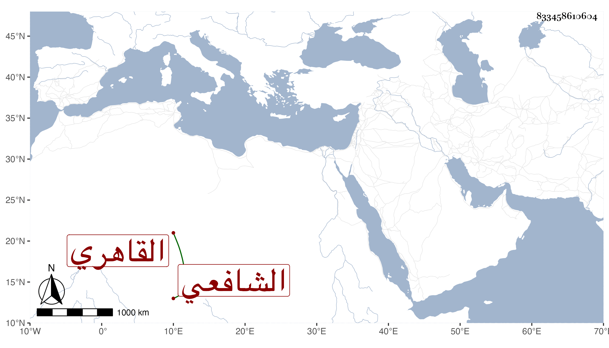

0902Sakhawi.DawLamic.ITO20230111-ara1.EIS1600.833458610604
Biography ID: 833458610604
1
محمد بن محمد بن محمد بن محمد أوحد الدين بن بدر الدين بن بهاء الدين القاهري الشافعي الآتي كل من أبيه وجده ويعرف كسلفه بابن البرجي وكذا ربما يعرف بابن بعيزق ولكنه بلقبه أشهر ، وأمه صالحة ابنة البدر محمد بن السراج البلقيني . حفظ القرآن والتنبيه وألفية النحو وغيرها وعرض ثم تشاغل عنها إلى أن مضى الكثير من عمره فعاد إلى درسها فحفظها ولزم ابن أسد في تفهمهما واشتد حرصه على ذلك ولم ينفك عنه مع الحرص على ملازمة السبع بجامع الحاكم صباحا ومساء والمداومة على الجماعة والتلاوة ومباشرة حضور سعيد السعداء كل يوم ، وهو ممن قرأ في صغره على عمى الزين أبي بكر وأكثر من الاجتماع على ابن خاله الولوي البلقيني وربما حضر عند العلم البلقيني وسمع مجلس ختم البخاري بالظاهرية القديمة ، ولا أستبعد سماعه من شيخنا ، ونعم الرجل كان . مات في رجب سنة ثلاث وستين وقد زاد على الستين رحمه الله وإيانا .
